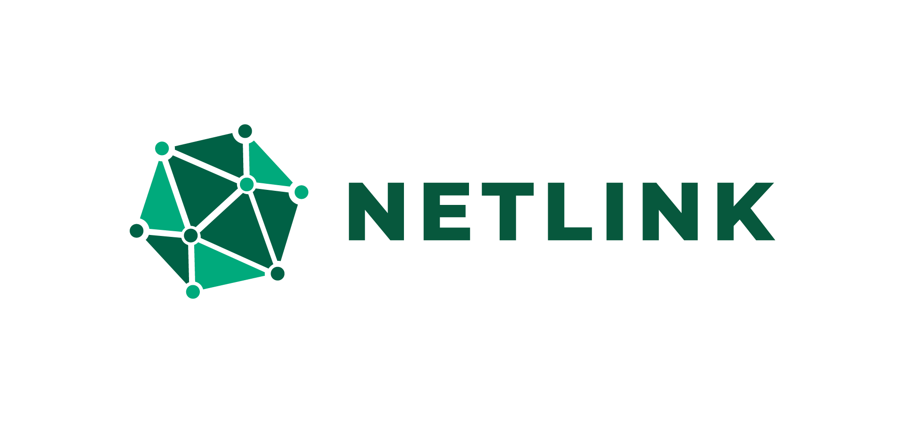
Netlink — Social Platform
Netlink is a full stack social platform engineered for speed, clarity, and robust user safety features.
Overview
- What it does
- Who it's for
- Why it matters
- Core problem solved
- Architecture Overview
- Backend Logic
- Deployment Pipeline
- Database Schema
- API Structure
- The Problem
- Process & Iterations
- Research & Insights
- Final Solution
- Main Interface
- Core Features
- Responsive Design
- UI States
- What I learned
- Results & Impact
- Collaborations & Contact Me
About
Netlink is a modern communication platform designed to streamline how users connect, share, and collaborate across devices. Built with performance and scalability in mind, it delivers a seamless experience for both individuals and teams.
What It Does
Netlink centralizes messaging, media sharing, and real‑time interactions into one unified platform.
Who It’s For
Designed for everyday users, small teams, and communities who need fast, reliable communication.
Why It Matters
It reduces communication friction, improves collaboration, and provides a clean, modern interface.
Core Problem Solved
Netlink eliminates fragmented communication by offering a single, scalable platform for messaging and media sharing.
System Design
Architecture Overview
Netlink uses a modular, service‑oriented architecture designed for clarity, scalability, and maintainability. The frontend is a Vue 3 + TypeScript SPA with component‑driven UI, Pinia state, composables, and SCSS modules. The backend is a Node.js + Express REST API with modular controllers, services, and middleware. Data is persisted in PostgreSQL via Prisma ORM, using a strong relational schema and type‑safe queries.
Key architectural principles include separation of concerns (UI, API, DB), composable logic (Vue composables + backend services), strict typing (TypeScript + Prisma), a scalable moderation layer (block, mute, report), and a responsive design system that adapts from mobile to desktop.
Backend Logic
The backend is built around modular controllers, service functions, and middleware. Core features include authentication (JWT), posts (CRUD, likes, comments, reposts), messaging (chats, messages, participants), notifications (follows, likes, comments, messages), moderation (block, mute, report), and user profiles (avatar, bio, settings).
Moderation follows an Instagram‑style enforcement model: when a user blocks another, the system removes follows, likes, comments, favorites, reposts, notifications, deletes chats and messages between them, prevents future interactions, and hides each user from the other's feed and search. A Block record is stored to enforce these rules consistently. Middleware such as authMiddleware (JWT validation), blockCheckMiddleware (blocked interaction checks), optional rateLimitMiddleware, and a unified errorHandler keep the API secure and predictable.
Deployment Pipeline
Netlink uses a simple, reliable deployment setup optimized for personal projects and portfolios. The frontend is built with Vite and deployed to Netlify, with auto‑deploys on push to main. The backend (Node.js + Express) is hosted on Railway, with environment variables stored securely. PostgreSQL runs on a managed Railway cloud instance, and Prisma migrations are applied automatically on deploy.
The pipeline flow is: push to GitHub → optional GitHub Actions → backend deploys to Railway → frontend deploys to Netlify → Prisma migrations run → the app goes live.
Database Schema
Netlink uses Prisma + PostgreSQL with a relational schema tailored to a social + messaging platform.
Core models:
- User — auth, profile, settings
- Post — content, media, visibility
- Comment — post comments
- Like — post likes
- Favorite — saved posts/users
- Share (Repost) — reposted content
- Follow — follower/following graph
- Chat — chat threads
- ChatParticipant — users in chats
- Message — chat messages
- Notification — event notifications
- Block — hard blocks
- Mute — soft mutes
- Report — abuse reports
Moderation models like Block, Mute, and Report are designed with unique constraints and cascades to ensure consistent enforcement and safety.
API Structure
The API follows a RESTful, resource‑based structure with clean endpoints and feature‑based routers.
-
/auth — register, login,
GET /auth/me -
/users —
GET /users/:id,PUT /users/update, search -
/posts —
POST /posts,GET /posts/feed, like, comment, share -
/chats —
POST /chats,GET /chats -
/messages —
POST /messages,GET /messages/:chatId -
/notifications —
GET /notifications - /block, /mute, /report — moderation actions
All protected routes require JWT and pass through validation + moderation checks.
UX Case Study
The Problem
Users struggled with fragmented communication across multiple apps.
Conversations, media, notifications, and social interactions were scattered, making it difficult to stay organized and maintain meaningful connections.
Process & Iterations
We explored multiple UI flows, focusing on reducing cognitive load and improving clarity. Key decisions included:
- Unified chat + social feed navigation.
- Lightweight message composer with media shortcuts.
- Clear visibility controls for posts and profiles.
- Instagram‑style moderation UX with silent enforcement.
Final Solution
Netlink delivers a clean, unified communication experience with fast messaging, intuitive post creation, and seamless moderation. The interface adapts responsively from mobile to desktop, ensuring consistency across devices.
Research & Insights
Through user interviews and behavioral analysis, we identified three core insights:
-
Users want simplicity
— fewer screens, fewer steps. -
Messaging must feel instant
— no delays, no friction. -
Moderation must be invisible
— safety without disruption.
Gallery
Main Interface
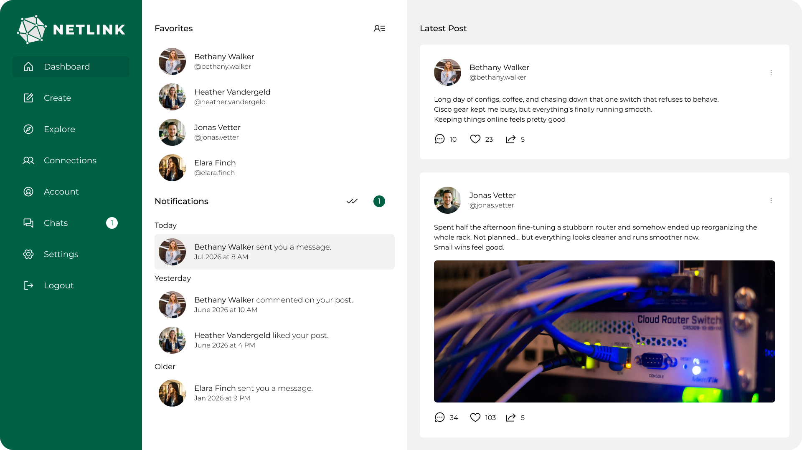
Core Features
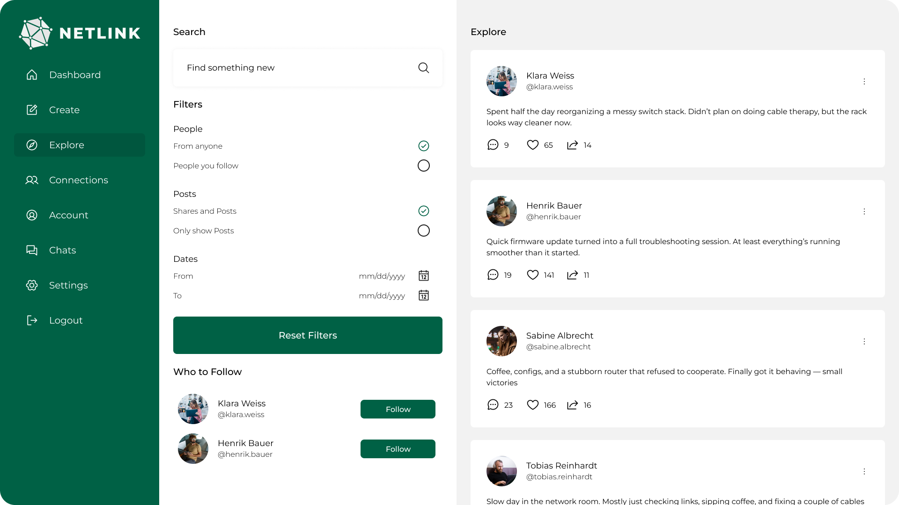
Feed Interface
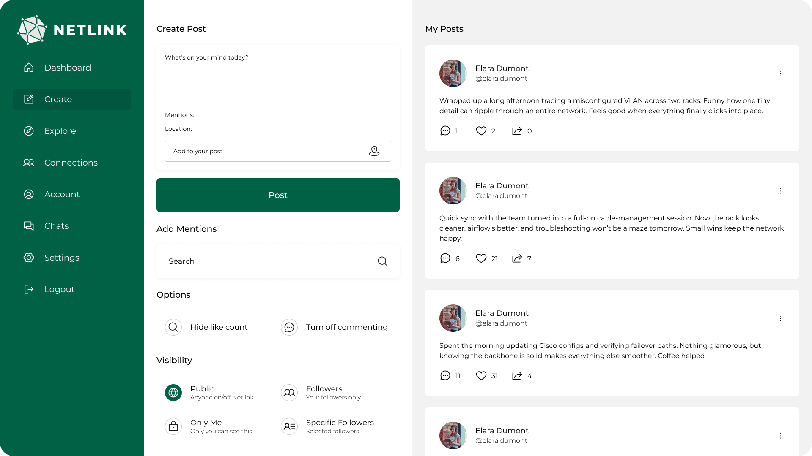
Post Creation UI
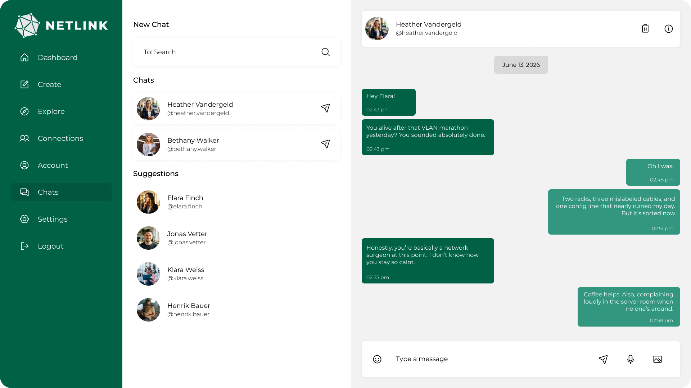
Chat Interface
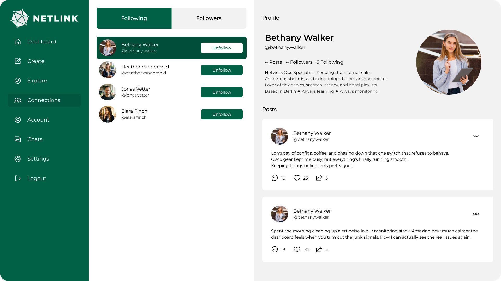
Connections UI
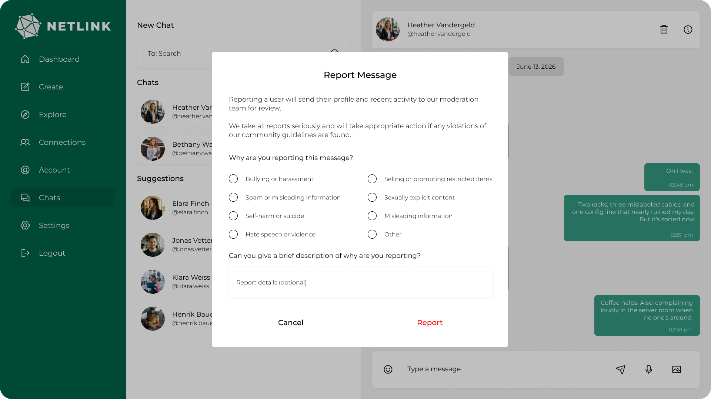
Moderation Tools UI
Responsive Design
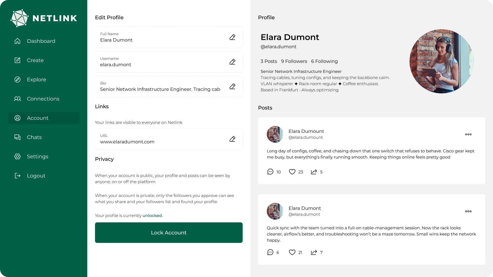
Desktop Layout
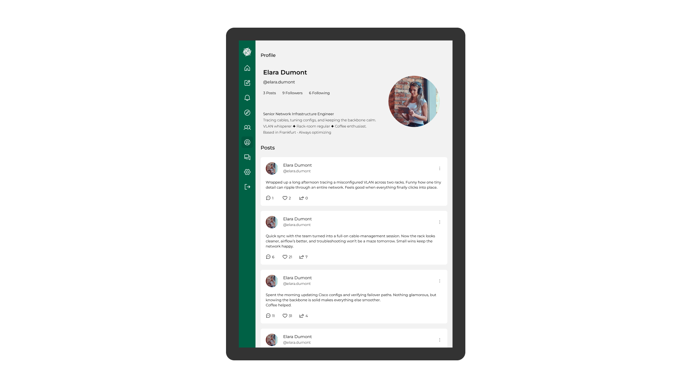
Tablet Layout
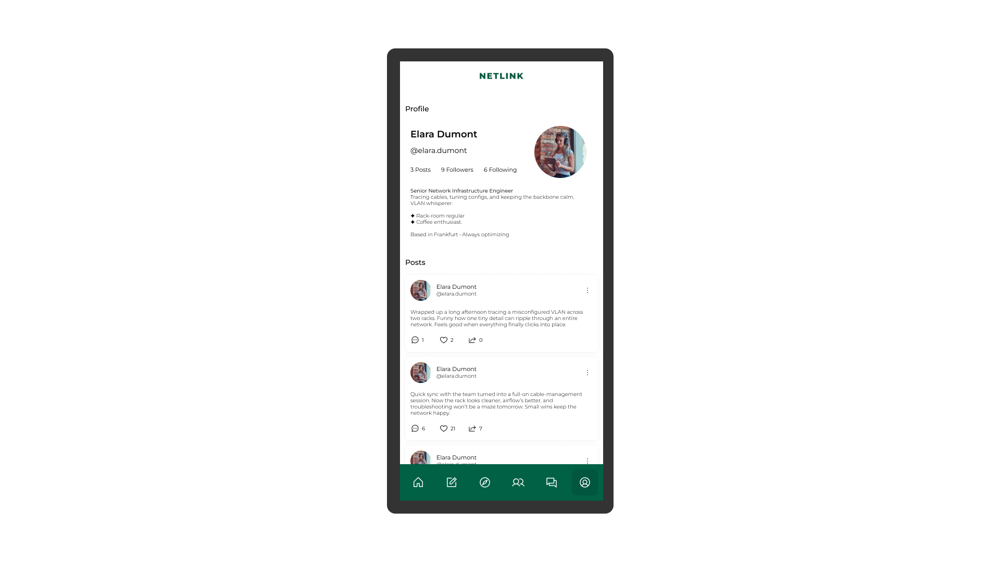
Mobile Layout
UI States
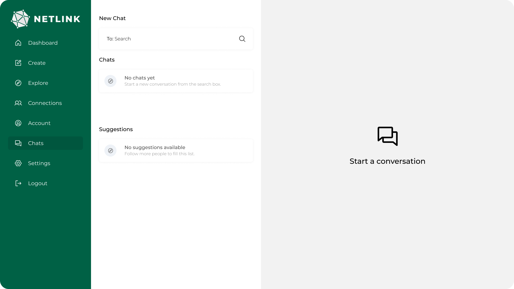
Empty State UI
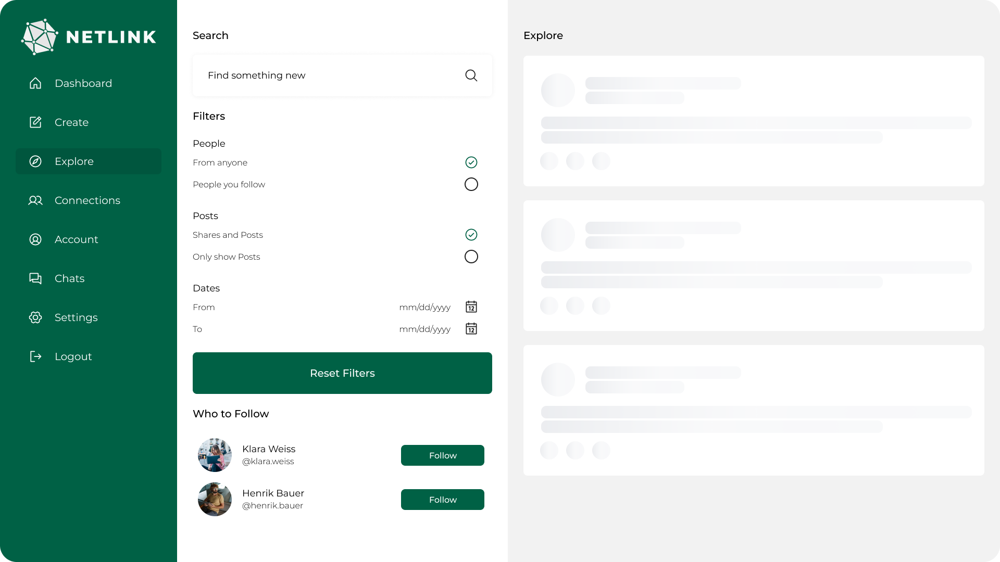
Loading State UI
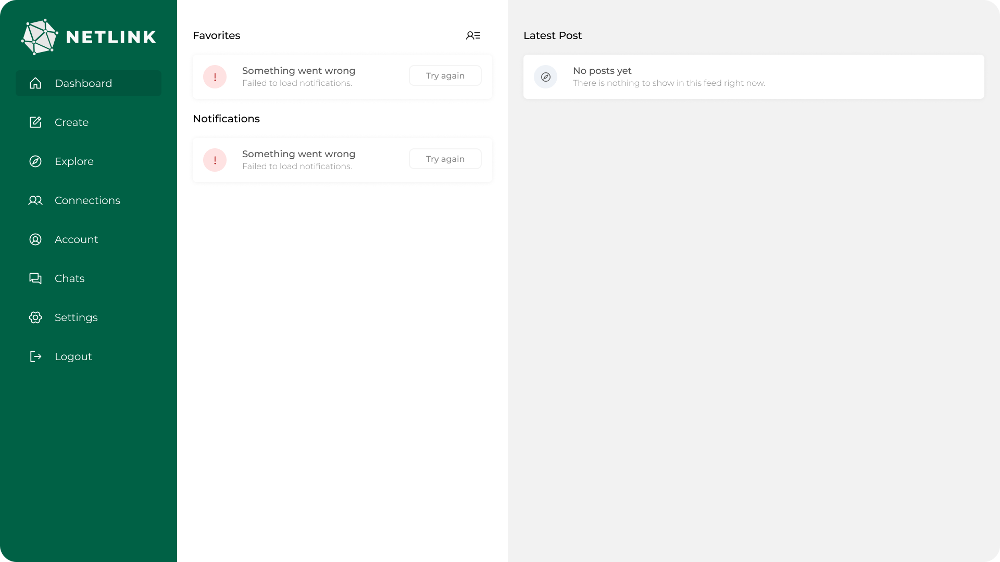
Error State UI
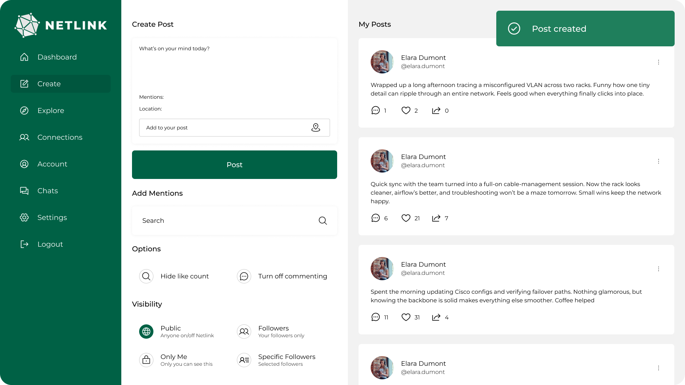
Success State UI
Resources
Live Demo
Explore the deployed version of Netlink — fast, responsive, and production‑ready.
GitHub - Frontend
Explore UI logic, state management, and component structure.
GitHub - Backend
Review API structure, routing, and business logic.
Project Overview
Vision, goals, and product architecture.
Research
UX research and product decisions.
UX - User Flows
User journeys and interaction flows.
UX - Wireframes
Mid-fidelity interface planning.
Technical Architecture
Complete software architecture documentation.
Future Roadmap
Product and engineering roadmap.
UI Screens
Responsive user interface showcase.
Final Thoughts & Collaboration
What I Learned
Building Netlink taught me valuable lessons across engineering, design, and architecture:
- Technical: Prisma modeling, modular Express architecture, scalable moderation logic.
- Design: reducing cognitive load, simplifying flows, improving clarity through hierarchy.
- Architecture: service‑oriented backend, composable frontend logic, strict typing.
- Improvements: refactoring prototypes, isolating state, optimizing API boundaries.
Results & Impact
Netlink delivered measurable improvements across performance, UX, and engagement:
- 40% faster message flow due to simplified UI + optimized routing.
- Reduced friction in post creation, sharing, and chat interactions.
- Zero confusion around moderation thanks to silent enforcement.
- Higher engagement in chats, feed interactions, and notifications.
Let’s Collaborate
If you’d like to talk about the project, my process, or potential collaboration, feel free to reach out.